Como chegar a janeiro de 2027 com público: o que publicar, em que ritmo, em que formato e como medir.
Gente nova chega pelo que ensina.
Quem chegou fica pelo que o app faz.
Perfil novo não ganha alcance mostrando produto. O Instagram entrega para quem não segue com base na retenção nos 3 primeiros segundos, nos salvamentos e nos compartilhamentos, e o que as pessoas salvam e mandam no grupo é conta que surpreende, regra de bolso e erro comum. O app entra como assinatura nesses vídeos e como prova nos vídeos de produto.
A favor
Abaixo da meta: mude só o gancho e publique de novo. Uma variável por vez.
| Pilar | Peso | Objetivo | Formato e exemplo |
|---|---|---|---|
| Educação e dor | 60% | Alcançar quem não segue: salvamentos e compartilhamentos | Vídeo "conta na tela" (25–35 s) e carrossel da Jornada. Ex.: Parcelado ou à vista?, R$ 10 por dia viram quanto? |
| Produto em ação | 25% | Converter quem já chegou ao perfil | Reels narrados de cada função (Telegram, Sonhos, Patrimônio…) e o resumo de 55 s fixado |
| Bastidor | 10% | Conexão e confiança | Vídeo de celular do time mostrando o app de verdade, sem citar nomes |
| Prova | 5% | Converter | Só com depoimento real e autorizado (depois do lançamento) |
Estrutura (25–35 s)
Por que funciona
Horário de referência: 18h–21h em dia útil (ajustar pelas estatísticas do perfil depois de 3 semanas). Pronto · A fazer · Depende de decisão.
| Semana | Seg · alcance (vídeo educativo) | Qua · carrossel (Jornada) | Sex · produto em ação |
|---|---|---|---|
| 1 · 26/10 | Pronto · Mesma geladeira: 11 ou 38 dias pra pagar? (melhor dia de compra) | A fazer · Reserva de emergência: quanto é o seu número | Pronto · Teaser de lançamento |
| 2 · 02/11 | Pronto · Carro ou aplicativo: seu carro custa R$ 2.100 por mês parado | A fazer · Disciplina rende mais que acerto | Pronto · Tudo o que o Appliquei faz (55 s), fixar no perfil |
| 3 · 09/11 | A fazer · Aluguel ou financiamento: a conta que ninguém faz | A fazer · Cartão de crédito não é renda | Pronto · Lançar pelo Telegram |
| 4 · 16/11 | Pronto · Mateus × Caio: quem começou cedo terminou com mais (juros compostos) | A fazer · Poupança: o custo do automático | Pronto · Sonhos |
| 5 · 23/11 | Pronto · Black Friday: parcelado sem juros ou à vista? | A fazer · Ordem a mercado × limitada | A fazer · Aviso de caixa apertado |
| 6 · 30/11 | A fazer · 13º salário: o que fazer primeiro | A fazer · A armadilha do prazo na renda fixa | Pronto · Meus investimentos |
| 7 · 07/12 | A fazer · Quanto o seu delivery custa em um ano | A fazer · A armadilha do dividend yield alto | Pronto · Patrimônio |
| 8 · 14/12 | A fazer · As contas de janeiro que você esquece em dezembro | A fazer · Câmbio corta nos dois sentidos | Pronto · Automações (45 s) |
| 9 · 21/12 | A fazer · Meta de 2027 sem data é só desejo | A fazer · Do custo de vida ao patrimônio-alvo | Decisão · Carteira sugerida (só orgânico; trocar "conta aberta") |
| 10 · 28/12 | A fazer · Para onde foi o seu dinheiro em 2026? | A fazer · Checklist financeiro de janeiro | A fazer · Contagem regressiva |
| Lançamento | Decisão · Vídeo do dia com a oferta (confirmar "7 dias grátis, sem cartão") | Stories o dia todo | Mensagem para quem seguiu |
Pronto · "Abre o extrato e procura essas 3 coisas" · "3 sinais de que o seu dinheiro vai apertar" · Automações (45 s). Têm mais produto que educação: funcionam melhor pagos, com R$ 10–20/dia, para descobrir qual gancho segura mais.
| Quando | O que fazer |
|---|---|
| Todo dia | 2–4 stories: enquete de dor ("Qual destas é você?"), uma tela do app, o post do dia com uma pergunta por cima. Responder direct e comentários. |
| Dia de post | Publicar entre 18h e 21h. Ficar a primeira hora respondendo comentários: é quando o Instagram decide se distribui mais. Repostar nos stories. |
| Mesmo dia | Publicar o mesmo vídeo no TikTok e no YouTube Shorts (legenda adaptada, palavras-chave no TikTok). |
| 1× por semana | Caixa de perguntas nos stories: as respostas viram pauta de carrossel. Um vídeo de bastidor gravado no celular. |
| Fim de semana | Anotar no calendário os números de cada post (3 s, até o fim, salvamentos e compartilhamentos) e escolher o que repetir. |
Parceria com criadores pequenos
Perfis de finanças com 10–50 mil seguidores, conteúdo em colaboração (#publi, regra do CONAR). É a alavanca de alcance mais forte para conta nova e costuma sair mais barata que anúncio.
Impulsionamento para testar
R$ 10–20/dia em 2 ou 3 vídeos, por 3 a 5 dias, para achar o gancho vencedor; depois, a verba vai no vencedor. Após o lançamento, pagar até ~R$ 63 por assinante (com cancelamento de 6% ao mês) ainda é saudável.
As primeiras semanas costumam ser lentas: o algoritmo ainda está entendendo para quem mostrar o perfil. O crescimento costuma vir em degraus, quando um ou dois vídeos educativos "pegam" e trazem uma leva de seguidores, e por isso constância vale mais que qualquer peça isolada. Ninguém consegue garantir números: o plano aumenta as chances, e as métricas dizem o que ajustar.
| Vídeo | Duração | Uso |
|---|---|---|
| Tudo o que o Appliquei faz | 55 s | Fixar no perfil · produto |
| Parcelado sem juros ou à vista? | 32 s | Alcance (educativo) · Black Friday |
| Mateus × Caio: começar cedo | 49 s | Alcance (educativo) · semana 4 |
| Melhor dia de compra | 39 s | Alcance (educativo) · semana 1 |
| Carro ou aplicativo? | 55 s | Alcance (educativo) · semana 2 |
| Teaser de lançamento | 31 s | Produto · semana 1 |
| Lançar pelo Telegram | 34 s | Produto |
| Sonhos | 30 s | Produto |
| Meus investimentos | 33 s | Produto |
| Patrimônio | 36 s | Produto |
| Carteira sugerida | 35 s | Produto · só orgânico (pendência CVM) |
| Automações | 45 s | Anúncio de diferencial |
| 3 cobranças no extrato · 3 sinais de aperto | 23 s e 27 s | Anúncios |
Todos estão em marketing/, com legenda pronta no LEIAME de cada pasta.
| Decisão | Por que importa |
|---|---|
| Criar a lista de espera com benefício real | Transforma alcance em contatos para avisar no lançamento. Sem ela, "siga" é o único passo possível. |
| Confirmar a oferta de lançamento | O vídeo do dia só fica pronto com a oferta real ("7 dias grátis, sem cartão"?). |
| Pendência CVM da carteira | Enquanto estiver aberta, a carteira sugerida fica fora do impulsionamento. |
| Alguém do time aparecer no bastidor | Rosto humano acelera a confiança. A voz continua sendo da empresa, sem citar nomes. |
| Frase "conta aberta" no vídeo da carteira | Pode ser lida como abrir conta em banco. Sugestão: "O próximo aporte, com o cálculo à vista". |